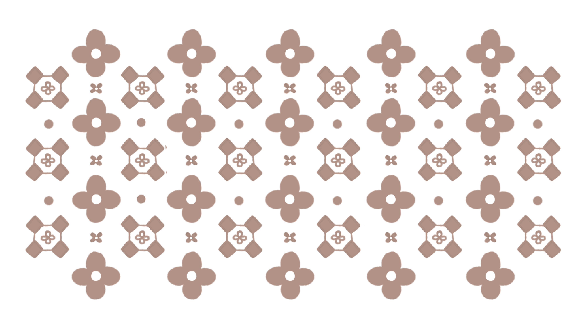

昕
鎮民身分證



鎮民身分證
姓名：昕
元素：溴 Br2
生日：9 / 18
體重：160 amu
簡介：
記憶小鎮與所有人的創造者，擁有創造一切事物的能力，然而這項能力只有曚與暮知曉，昕也將這項能力嚴格隱瞞，目前在日暮茶行擔任老闆兼店長。
習慣
對鮮奶茶有異常執著，時常因畫圖、整理病歷而晚睡，作息不太規律，因此昕時常是茶行三人中，最晚到的人（常中午才到）。睡眠時間非常的長，約 8 至 12 小時，是很愛睡覺的人，尤其最喜歡在冬天睡覺。
性格
本身的個性是安靜內向，不是特別愛出風頭的類型，由於性格反骨，與其被管，更喜歡當暗地管理的人。長久的生命經驗與自身的創造能力，使他對意識空間的真實感有些抽離，會不自主地用上對下的語氣與方式對待他人，昕也正在改善這點。昕不太喜歡與人互動，即便長年的歲月讓他逐漸變得擅長談吐，但對他來說依然是吃力的。昕時常面帶微笑，看起來和善，但與慢熟的昕建立關係不是簡單的事情，即便他人認為已經和昕很熟了，但昕可能不這麼認為。
昕視角的角色關係
與曚和暮的是家人，與鈴、理、朶、霏是朋友，偏向老闆與員工的關係。
能力
是意識空間的主人，而擁有創造所有事物的能力。除此之外，昕也對繪畫創作特別有興趣，成為了他設計意識空間重要的契機。由於日暮茶行的開張，昕與曚在開張前 5 年，就預先規劃拿體術作為侵蝕者的自我防衛，並加入員工訓練範疇，因此昕也擅長自我防衛等技術。
作為溴原子，角色在受傷時是不會流血的，取而代之的是惡臭的液態溴。昕的溴會在空氣中快速蒸發，並發出暗紅的蒸氣與惡臭味；若液態溴或是氣態溴沾到物品或人的話，會出現極強的腐蝕性，因此除了鑽石，其他人都不可接觸受傷的昕。如此設計是為了禁止昕虛弱時被無關者靠近，以免他人得知昕的其他能力。安眠糖果的製作方式，也跟溴有些關聯；除了安眠外，昕有穩定火焰，甚至可以直接徒手熄火的被動能力，在沒有外傷的情況下，昕不會發出惡臭。
介紹：
昕是意識空間的第一位居民，同時也是整個意識空間的主人，他擁有自由創造事物的能力，無論是建築、食物、植物，甚至是生命，都能依照自己的想法誕生於這個世界之中。
由於意識空間的時間流逝速度與現實世界不同，昕很快便意識到，自己的生命或許會接近永恆，漫長的歲月與造物主的身分，讓他開始擔心，自己總有一天會失去作為人原本的情感與道德觀，因此，昕創造了與自己擁有完全相同外貌與個性的複製體「曚」。曚的存在，最初的目的，是為了讓昕能夠在漫長的生命中，依然保有人性與自我，兩人擁有極高的默契與相似的性格，但因為經歷與選擇不同，也逐漸發展成不同的人，對昕而言，曚是世界上最理解自己的人。
之後，昕在意識空間年份：02年，創造了第三位居民「暮」。
暮與昕不同，他並不擁有直接創造事物的能力，但卻擁有極其驚人的創造力、思考能力與學習速度，暮透過世界原有的素材與現實知識，自行研究出大量技術與作品，包含繪畫、雕塑、建築設計、植物學、機械結構等等，甚至在許多領域超越了身為造物主的昕，昕也才在這時發現自己有這樣的面向，並很崇拜暮這個家人。
三人曾經一同居住在尚未建立城鎮的草原之中，度過了相當漫長的歲月，然而，隨著時間不斷流逝，暮開始對近乎永恆的生命產生痛苦，對暮而言，夢想與目標之所以珍貴，是因為人生有限，但在意識空間裡，幾乎所有事情都能被完成，甚至有無限的時間能夠繼續前進，當一切都能實現後，留下的卻只有更加龐大的空虛。
意識空間年份：180年，暮向昕提出了自己的最後一個目標，希望昕能夠親手結束自己的生命。
昕無法理解暮的想法，他認為意識空間已經是最接近理想的烏托邦，既然沒有疾病、沒有飢餓、沒有憂慮，甚至可以一直做喜歡的事，暮又為何想離開這個世界，暮突然從昕理想的模樣，變成昕意想不到且最不想成為的模樣。兩人因此爆發了極為嚴重的爭執，昕甚至差點使用能力竄改對方，但最終，昕仍然選擇尊重暮的意願，親手結束了暮漫長的生命。
暮死後，昕開始變得比過去更加低調，也不再輕易提及關於意識空間核心的事情，直到多年後，昕在整理暮遺物時，意外發現了大量未完成的城鎮藍圖與設計稿，那些原先只是暮隨手留下的塗鴉與構想，卻逐漸讓昕產生了新的念頭。
因暮的事件，成為了昕想了解真正的自己的契機，他反思著自己的「理想」的樣子與「真實」的樣子，究竟是什麼？以及他究竟還有多少自己無法接受的一面，他想了解想去嘗試接納，於是昕開始按照暮的設計，於其他區域建立新的聚落與街道，並將三人曾經生活過的草原保留下來，設立為如今的「無名花園」。
之後，記憶小鎮正式誕生，居民是由昕的性格、情緒、才能、記憶與各種「可能性」延伸而出的生命，創造目的，是昕為了了解自己所不知道的面向，為了能夠觀察居民、接觸他人，同時避免再次發生像暮一樣的事件，昕選擇隱藏自己作為造物主的身分，並對外宣稱自己僅是小鎮的創建參與者之一，而真正的設計者則是已經離世的暮，後來，昕在小鎮中央建立了「日暮茶行」表面上，它是一間提供茶飲與甜點的復古茶行，實際上，則是用來照顧情緒不穩定居民的診所與療養空間，對昕而言，茶行存在的意義，並不是消除情緒，而是讓人們能夠安全地與自己的情緒共處，並了解自我。
曚
鎮民身分證


鎮民身分證
姓名：曚
元素：碳 C（鑽石結構）
生日：待補
體重：12 amu
簡介：
日暮茶行的副店長，曚是昕的複製體，兩人的個性與長相一模一樣，但互相經歷的事不同，是昕想維持「自我」而創造的人，與昕關係很好。
習慣
對鮮奶茶也有異常執著，日常喜好是畫圖，有兼職畫家的職業，作息不太規律，但因工作要求，還是會準時上班，睡眠時間跟昕一樣非常的長，約 8 至 12 小時，是很愛睡覺的人，尤其最喜歡在冬天睡覺。
性格
本身的個性是安靜內向，不是特別愛出風頭的類型，喜歡當管理層的人，曚不太喜歡與人互動，即便長年的歲月讓他逐漸變得擅長談吐，但對他來說依然是吃力的，但曚喜歡與朋友相處，時常與鈴跟朶待在一起，在這個時候曚總是特別放開，與昕待在一起反而不那麼放得開。
曚非常不太喜歡碰到油脂類，因此大多料理或是甜點都由鈴或是昕製作。
曚視角的角色關係
與昕和暮是家人，與鈴、朶是超級好朋友，對霏帶有好奇但不太熟，不太熟理但知道昕與理有聯繫。
能力
是茶行的茶師，專門使用茶行的茶葉，搭配一些藥草進行製藥，通常茶行的茶都是由曚親手泡的，昕每天也會請曚泡一杯鮮奶茶，在小鎮是小有知名的小畫家，時不時會替他人繪製圖畫。
曚與昕在開張前 5 年，就預先規劃拿體術作為侵蝕者的自我防衛，並加入員工訓練範疇，因此曚也擅長自我防衛等技術，並且也是主要教導鈴體術的人。
作為鑽石，角色在受傷時是不會流血的，取而代之的是尖銳的鑽石碎片，曚在受傷時，傷口會因不規則的切面，而變得極其尖銳，同時意外可用於自保。
曚的聽力異常的好，特別容易聽到細微的聲音，且他的手時常是冰冷的，因鑽石強力的導熱能力，使他能夠自由的傳遞熱能，這在泡茶時特別方便。
介紹
曚是意識空間的第二位居民，同時也是昕為了維持自身人性而創造出的複製體。他擁有與昕完全相同的外貌與基礎性格，但因為所經歷的事情不完全相同，而逐漸發展出獨立於昕之外的自我。
曚與昕兩人之間擁有極高的默契與理解力，許多時候甚至不需要言語就能理解彼此的想法，在意識空間早期，與昕一同居住在尚未建立城鎮的大草原之中，與第三位居民「暮」共同生活了相當長的一段時間。
在與暮的相處中，曚見證了暮驚人的創造力與思維能力，在昕與暮的爭執事件中，曚一直處於卡在中間的中立派，他明白暮的想法，但又理解昕不想失去暮的痛苦，深怕爭執的曚，在兩人爭吵時只敢在自己的房間待著，他不敢說話，也不知道這種時候該說甚麼話。
意識空間年份：180 年，暮死亡後，曚同樣身處於那場長時間的對立與壓抑之中，同時他一瞬間失去了一起生活 180 年的親人，曚與昕都非常難過，曚也在後悔著，如果當時自己不那麼逃避的話，也許當時多說點甚麼的話，結局會不會不一樣，就算暮一樣會逝世，但也許會有更完美的結局也說不定？如果當時和昕多聊聊，不那麼恐懼的話，也許昕就不那麼難過了也說不定？如果暮當時跟他見最後一面時，曚說出真心話自己就不那麼後悔了也說不定？曚後悔著，同時他對暮與自己感到失望，他同樣難以接受自己的懦弱，他無法理解，也不知道這種膽怯從何而來，這件事情讓曚卡了很久，而爆發了後續的後悔事件（因為曚沒有像昕一樣完整的走過一遍心路歷程，所以曚會比昕更無法接受自己的不完美與居民的不完美）
暮離開之後，曚與昕一同離開草原，並見證昕開始整理暮遺留下來的設計與藍圖，隨著時間推進，曚參與了記憶小鎮的初期建設。在記憶小鎮正式成立後，曚成為日暮茶行的主要茶師，同時負責部分居民的情緒照護與基礎治療，他擅長使用茶葉與藥草調配出不同效果的飲品，使居民的情緒得以穩定，但並不會直接消除情緒本身。
曚同時也兼任畫家，會在空閒時間進行創作與繪畫，僅此是因為這是他的興趣，且讓他開心，他的作品風格偏向可愛又柔軟，如同他自身給人的印象一般。
隨著時間推移，曚逐漸成為記憶小鎮中最穩定的日常存在之一，持續理解世界、理解他人，也理解自己，在這段間，曚認識了鈴與朶，三人的感情非常的好，時常一起出門、做料理，也常常一起通電話。
暮
已故


鎮民身分證
姓名：暮
元素：氧化釹 Nd2O3
生日：待補
體重：336 amu
簡介：
與昕和曚關係很好，是一名比昕更有創造力的天才，即便沒有如同昕，有創造一切事物的超能力，但擁有手作與天才般的計算能力，是小鎮的主要發想人。
習慣
十分的宅，喜歡待在花園或房間畫圖，興趣非常多，學習能力很強，時常設計與創作各種新東西，如建築設計、藝術（雕塑、油畫）、化學，且數學計算能力非常好，同時對花草植物有異常的執著，很喜歡一種昕隨意創造給他的花，是一朵沒有名字的四瓣花，並自己取名為「無名花」，暮特別喜歡做一些實驗研究，在建築上、化學或是植物學上，都撰寫了不少研究結果，時不時也會拿曚或是昕的頭髮，或是身上的組織做實驗，奇妙的是他不太擅長料理。
性格
個性算是外向，說話有些毒蛇直接，又愛開玩笑捉弄昕與曚，絕對不碰自己不喜歡的事物，時常沉浸在自己的世界中，與人相處時特別吵鬧。暮對於未來很有明確的規劃，且會迅速的達成自己想做的事情，雖然在時間管理上比昕還要散漫。
暮視角的角色關係
與昕和曚是家人。
能力
暮的實作與手作能力，完全不輸昕的創造能力，其中花園的溫室兼實驗室正是暮親手建造的（雖然有強迫昕跟曚配合他一起蓋），在三人生活的小屋外，暮還有蓋一個小屋，是用於他做畫與雕塑的地方，暮不太喜歡整理房間，在他的空間裡總是亂中有序的擺一堆東西，而且事情都做一半又跑去做另一件事。
作為氧化釹，角色在受傷時是不會流血的，取而代之的是散落一地的氧化釹粉末，暮除了天生腦子很好，還很有設計天賦外，他也對空氣中的溼度與空氣品質十分敏感，且可從身上吸收的二氧化碳分布到實驗物體上面，十分方便他做化學與植物學的相關研究。
介紹
暮是意識空間的第三位居民，由昕在意識空間年份：02 年所創造。與曚不同，暮並非昕的複製體，也不具備直接創造世界的能力，而是以自身極高的學習能力、創造力與實作能力，在既有的世界素材中發展出屬於自己的知識體系與創作方式。
在早期的草原時期，暮與昕、曚共同生活於尚未建立城鎮的區域，這段時間中，暮展現出驚人的天賦與行動力，他能夠快速將想法轉化為實體成果，無論是建築、雕塑、繪畫、植物培育或是化學研究，都能以極高效率完成。相較於昕的「創造一切」，暮更偏向於「理解並改造既有的一切」。
暮對植物，尤其是昕隨手創造出的四瓣無名花，產生了異常強烈的興趣。他不僅持續觀察與記錄其生長狀態，甚至將其視為研究核心之一，並將該花正式命名為「無名花」。在暮的概念中，無名花並非普通植物，而是一種具有象徵意義的存在。
隨著時間推移，暮的能力與知識不斷累積，他開始建立屬於自己的空間，包括溫室、實驗室以及獨立的創作小屋。在這些空間中，暮進行大量研究與創作，涵蓋建築設計、化學實驗、植物學觀察與藝術創作等領域，其成果甚至在某些方面超越了昕的預期。
然而，暮的性格與另外兩人截然不同，他外向、直接，帶有明顯的戲謔與玩笑傾向，說話風格尖銳且不留情面，常以捉弄昕與曚為樂，同時，他對自己不感興趣的事物極為排斥，行動與選擇高度依賴自身興趣驅動，因此生活節奏常呈現高度跳躍性與不穩定性。
儘管如此，暮在行動上極具效率與決斷力，能迅速完成目標規劃與實踐。他對未來有明確想像，作為天才的他，可以在短時間內完成許多自己想做的事情，甚至在許多領域不斷突破自身極限。然而，這種「不斷完成」的狀態，也逐漸在他心中累積出對「無限」的疲乏。
隨著時間推移，暮開始對永恆的生命產生質疑。對他而言，目標之所以有意義，是因為存在終點；但在意識空間中，幾乎所有事情都可以被完成，而時間又近乎無限，這使得每一次達成目標之後，留下的不是滿足，而是更深的空白與疲憊。這份無止盡的空虛逐漸轉化為痛苦，使暮開始認為，生命應該存在一個「結束」，而死亡正是他所尋找的最後一個目標。
於是，他向昕提出，希望由昕親手結束自己的生命，昕無法理解這個請求。他認為既然這個世界已經沒有飢餓、疾病與真正的苦難，那麼「離開」本身便失去了意義。兩人因此爆發激烈爭執，從理念一路延伸到存在本身的否定與理解差異，這場僵持持續了近一年之久。
在這段期間，三人的關係逐漸變得沉重而緊繃。暮的狀態也因長期情緒壓力而出現變化，他的髮色逐漸偏向帶有冷色調的藍色，如同環境濕度改變時留下的痕跡一般，象徵他逐漸失衡的內在狀態。
最終，昕在漫長的掙扎後選擇妥協，理解並尊重暮的意願，與他達成共識，親手結束了暮的生命，在最後的時光中，三人度過了相對平靜的一段對話時間，沒有爭執，只有整理與告別，暮也在離開前前往見了曚最後一面，並以平常的語氣與他交談，最終，暮是在帶著笑意的狀態下離開這個世界的。
鈴
鎮民身分證


鎮民身分證
姓名：鈴
元素：金 Au
生日：待補
體重：197 amu
簡介：
日暮茶行的員工，跟曚和朶是超級好朋友，超喜歡研發新甜點與茶品，尤其喜歡吃檸檬蛋糕，常常與曚和朶出去採買食材，有點戀愛腦但一直沒交伴侶。
習慣
超級喜歡製作甜點，與研發新品，是日暮茶行的首席甜點師兼藥師，時常製作新的口味給其他成員試吃，而自己最喜歡檸檬蛋糕，但偶爾會有出包的時候。鈴很愛出去玩，通常有局 99% 是鈴約的。平時喜歡出去運動打球，雖然會打籃球，但最喜歡的還是羽球。
性格
個性外向，善解人意，特別愛與人聊天與認識他人，通常都是鈴帶著曚一起與客人聊天，在聊天時常常是鈴在滔滔不絕，曚負責聆聽與情緒價值。
鈴的個性認真，比昕跟曚有時間觀念多了，通常是第一個到茶行的人。雖是如此但鈴有些少根筋，時常忘東忘西。
鈴視角的角色關係
與昕是好朋友，和曚跟朶是超級好朋友，與霏跟理是朋友。
能力
除了烘焙能力與研發新品的能力外，鈴特別擅長瞄準，他喜歡玩夜市的射氣球，且很擅長投籃運動，因鈴的喜好緣故，在茶行裡鈴擁有一把專屬的橡膠槍，用於侵蝕者出現時緊急防身，鈴雖然擅長運動，但不太擅長近戰，因此大多時候他都負責遠程射擊。
鈴很擅長製作藥物，藥草的整理與採買都是由鈴一手包辦，同時每當有患者出現時，鈴都能精準地分配甜點給他們。
身為黃金，鈴因強力的延展性，使他不太容易受外傷，鈴的體溫比其他人都還要高，且在冬天時特別不怕熱，因此他的手，成為了所有人的取暖的工具。
介紹
鈴是由昕在意識空間年份：194 年時所創造。在十歲時因自身興趣，時常進出日暮茶行，曚也是在那時注意到鈴的存在，兩人相識後一見如故，鈴也在過程中找到自己的興趣，並與曚一起詢問昕是否能加入茶行，昕答應了請求，但讓曚自己幫鈴員工訓練，以及製作茶與藥草。
日暮茶行剛成立時是沒有甜點的，只有提供特有的藥草茶，直到鈴的加入，才加入甜點的選項，除了鈴的創意，鈴帶來的活力與熱情，為這間茶行添加了許多色彩。
朶
鎮民身分證

鎮民身分證
姓名：朶
元素：綠簾石
生日：待補
體重：483 amu
簡介：
無名花園管理員與植物學家，代理保管暮曾照顧的花園。
習慣
熱愛植物，住在花園森林深處；約凌晨四點醒，睡 4～6 小時；喜歡在霏睡覺的地方澆花。
性格
外向、極度天然呆，易被開玩笑；心思細膩，能完善照顧整座花園。對霏又愛又恨。
能力
照顧植物的天賦；負責植物孕育與環境維護，連街上花草也有朶的照料。睡眠短，常清晨巡邏森林。
介紹
192 年誕生，代理保管暮曾照顧的無名花園。持有通行證發放權，深入研究暮的研究報告。與昕是朋友，與曚、鈴是超級好朋友，與理是朋友。
理
鎮民身分證

鎮民身分證
姓名：理
元素：待補
生日：待補
體重：待補
簡介：
藏書庫管理員，194 年誕生；除昕外唯一持通行證者。
職責
管理圖書館深處不對外開放的藏書庫，協助部分圖書館行政。除昕外唯一持通行證者。
工作區
二樓為主要常駐區，可閱覽意識空間知識、暮論文與歷史。一樓長期上鎖，僅必要時維護，部分資料連理也無法閱讀。
介紹
看守記憶小鎮與意識空間的核心資料，以免一般民眾誤闖。與昕有聯繫，是鎮上少數知悉部分真相的人之一。
霏
鎮民身分證

鎮民身分證
姓名：霏
元素：待補
生日：待補
體重：待補
簡介：
194 年誕生的小鎮居民，與理同年誕生。
人際
與鈴、理是朋友。朶對霏又愛又恨——常在他睡覺的地方澆花。曚對霏帶有好奇但不太熟。
介紹
194 年與理一同誕生的小鎮居民。作為昕創造的生命之一，繼承了創造者某種特質與可能性，在記憶小鎮的日常中擁有自己的生活軌跡。